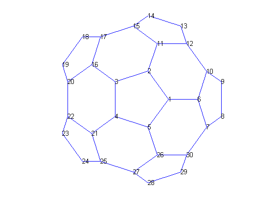
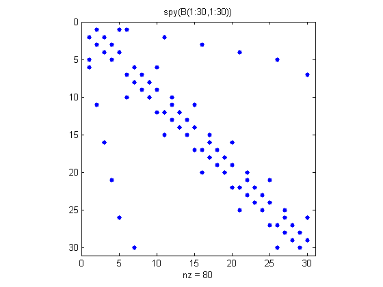

グラフと行列
このデモは、グラフと行列の関係の説明と SPARSE 行列の良い応用例を示します。
グラフは、接点間の連結が指定された接点の集合です。この例は、Buckminster Fuller の測地線ドーム (サッカー ボールまたは炭素 60 の分子) の連結グラフです。
MATLAB® では、測地線ドームのデモは関数 BUCKY で実行することができます。
% Define the variables. [B,V] = bucky; H = sparse(60,60); k = 31:60; H(k,k) = B(k,k); % Visualize the variables. gplot(B-H,V,'b-'); hold on gplot(H,V,'r-'); hold off axis off equal

グラフは、隣接行列で表されています。
隣接行列を作るために、接点に 1 から N の番号を付けます。そして、接点 i が接点 j と連結している場合、行列の (i,j) 要素を 1 にし、そうでない場合、0 にします。
% Define a matrix A. A = [0 1 1 0 ; 1 0 0 1 ; 1 0 0 1 ; 0 1 1 0]; % Draw a picture showing the connected nodes. cla subplot(1,2,1); gplot(A,[0 1;1 1;0 0;1 0],'.-'); text([-0.2, 1.2 -0.2, 1.2],[1.2, 1.2, -.2, -.2],('1234')', ... 'HorizontalAlignment','center') axis([-1 2 -1 2],'off') % Draw a picture showing the adjacency matrix. subplot(1,2,2); xtemp=repmat(1:4,1,4); ytemp=reshape(repmat(1:4,4,1),16,1)'; text(xtemp-.5,ytemp-.5,char('0'+A(:)),'HorizontalAlignment','center'); line([.25 0 0 .25 NaN 3.75 4 4 3.75],[0 0 4 4 NaN 0 0 4 4]) axis off tight

以下は、多角形ごとに番号を付けた C60 構造分子の 1 つの半球内の接点です。
subplot(1,1,1); gplot(B(1:30,1:30),V(1:30,:),'b-'); for j = 1:30, text(V(j,1),V(j,2),int2str(j),'FontSize',10); end axis off equal
この半球の隣接行列を可視化するために、関数 SPY を使って非ゼロ要素の輪郭をプロットします。
この行列は、接点 i が接点 j と結合する場合、接点 j は接点 i と結合しているため、対称行列になります。
spy(B(1:30,1:30))
title('spy(B(1:30,1:30))')
 半球に番号を付けたものを反対側に映して、全体に番号を付けます。
[B,V] = bucky; H = sparse(60,60); k = 31:60; H(k,k) = B(k,k); gplot(B-H,V,'b-'); hold on gplot(H,V,'r-'); for j = 31:60 text(V(j,1),V(j,2),int2str(j), ... 'FontSize',10,'HorizontalAlignment','center'); end hold off axis off equal

最終的に、最後のスパース行列の SPY プロットを表示します。
spy(B)
title('spy(B)')

このグラフでは、各接点は他の 2、3 の接点とのみ連結しています。結果として、隣接行列は行ごとに 2、3 の非ゼロ要素を含みます。
このデモでは、スパース行列が役に立つ例を 1 つ示しました。
gplot(B-H,V,'b-'); axis off equal hold on gplot(H,V,'r-'); hold off